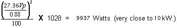

- 00000018WIA30C48F20GYZ
- id_131058272.3
- May 16, 2025 7:38:30 AM
Dummy Load and Cables Calibration
Prerequisites
| Personnel requirements | |||
|---|---|---|---|
| Required persons | Preliminary requirements | Procedure | Finalization |
| 1 | - | 30 minutes | - |
| Tools and test equipment | |||
|---|---|---|---|
| Item | Quantity | Part number | Manufacturer |
| 50Ω, 200 Watt, 30 dB Attenuator (Dummy Load) (Only use with 46-317724G1) | 1 | 46-317724P14 | - |
| RF Test Cables Kit (use only with G1 Power Measurement Kit) | 1 | 46-255816G1 | - |
| RF Power Measurement Kit W/O 30DB Attenuator | 1 | 46-317724G1 | - |
| Exciter 3 RF System Cabinet Service Cable Kit | 1 | 5117087 | - |
| Safety |
|---|
|
Before working in any GE HealthCare MR suite or doing any GE HealthCare service procedure, you must:
If you have any safety concerns at any time, do not begin work or immediately stop work and move to a safe location. Immediately contact your supervisor or site safety officer for instructions on how to proceed. |
About this task
Note When measuring high frequency (in this case, 64MHz) on any 100MHz scope, there may be an error due to the bandwidth limitations of the scope. (If necessary, read Scope Trivia at the end of this procedure.)
Overview
Procedure
Initial Setup
Procedure
Data Collection
Procedure
Analysis
Procedure
Calculation of RF power
Procedure
- Peak voltage should be used in the calculation in order to get an accurate result. It can be converted to power using the following formula as long as certain factors are known and accounted for. The scope correction factor MUST be known. So must the actual total loss attributed to anything that connects the measuring device to the source. This often includes the accumulated loss associated with the dummy load and any interconnecting cables. RF power calculation with no loss shows the calculation of power if all the attenuating devices in the measurement circuit exhibited perfect loss; that is, the devices added no more or less loss than what they were designed to provide. RF power calculation with loss considered shows the same calculation of power but accounts for the measurement-circuit loss values in deriving the true power. Note that the loss has a significant impact on the calculated power. Note The scope correction factor must be known for the formula shown below. If it is not known, DO NOT use this method. Grossly inaccurate measurements and possible system damage will result.
Table 4. RF power calculation with no loss 
Assume Z = 50 Ohm, Vpeak = 31.62, scope correction factor = 1.00 (no loss), dummy load and cables atten. = 1000, (dummy load and cables are all ideal).This result assumes a theoretically perfect situation in which there is no loss. These situations, in common practice, rarely exist!
- Now, consider the "real life" type situation in which the loss is considered:
Table 5. RF power calculation with loss considered
Assume Z = 50 Ω, Vpeak = 27.36, scope correction factor = 0.88, dummy load and cables atten. = 1028
Accounting for the loss resulted in an accurate answer. 9937 Watts is as close as we can hope to get to 10000 Watts without using the RF Power Measurement Kit. Note that if none of the loss (If considering 0.88 as 1.0) had been accounted for the error could have been 2242 Watts or 22.6%. As a result, the observer would attempt to adjust the RF power far above the 10000 Watt limit!
System Restoration
Procedure
- Reconnect original cables to the SRFD J14 and Mega Switch J100.
- Enable the TNS. See Starting TNS Function.
- Perform a TPS Reset to set the MGD back to imaging mode so that the system will be able to scan. Failure to do this will result in Autoprescan failures due to a loss of receive signal.
- Perform one satisfactory head or body scan.
Wattmeter Trivia
Procedure
- Why are measurements between a oscilloscope and a Bird Wattmeter found to be different? Repeated GEMS Education Center lab groups that performed the Dummy Load and Cables attenuation process correctly, and obtained an accurate attenuation value, were able to accurately measure RF power as well as with a 400 MHZ scope! Remember, for wattmeter measurements however, the meter reading must be multiplied by the atten factor. Leaving this little factor out is the reason why the above ‘note’ was made. In body mode the wattmeter is placed after the dummy load. Its atten value must be used to calculate the correct RF value. If it is NOT used, then it should be expected there will be an error of 10% or more!
- In head mode, the wattmeter is placed before the dummy load. In this case only the ‘cable’ factor is used to correct the wattmeter reading. The ‘cable’ factor is the other atten test you did for the 10 foot cable only. Typically that value is between 1.0 to 1.2. Doesn’t sound like much???? Take your calculator out for a moment. Take 2,000 watts (displayed reading) and multiply by an atten factor of 1.0 ; the results are obvious, 2,000 watts. Now take the same displayed 2,000 and multiply it by an atten factor of 1.2 = 2,400 watts! Hopefully this example will show the importance of the attenuation values. You just calculated a 20% error if you were wrong because you didn’t do atten test on the 10 foot cable!